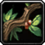

Flousse
dopant (absorption directe) - 10 po
↪ plante - plaine - été
↪ plante - plaine - été
Cette plante haute donne de petits fruits semblable à des grains de cassis en taille et en couleur. Leur gout acide se rapproche pas contre plus du citron. Manger ses baies a la propriété d'augmenter la tension dans les globes oculaires avec pour conséquence de faire rompre certains petits vaisseaux sanguins qui remplissent les yeux de sang. La vision n'est toutefois pas affectée. On peut douter de l'intérêt de manger ces fruits vu les conséquences que cela entraine. En fait, plusieurs tribus barbares affectionnent la flousse car les yeux sanglants des guerriers qui la consomment ne font qu'encore plus intimider leurs adversaires.
Manger des baies de flousse donne un bonus de +2 aux jets de Charisme (Intimidation) pour une durée de 1 minute. Il n'y a pas de contre-indication connue au fait d'abuser de ces fruits, malgré l'aspect spectaculaire que cela peut donner.
Manger des baies de flousse donne un bonus de +2 aux jets de Charisme (Intimidation) pour une durée de 1 minute. Il n'y a pas de contre-indication connue au fait d'abuser de ces fruits, malgré l'aspect spectaculaire que cela peut donner.
Illustration reproduite avec l'aimable autorisation de Christine Achard
Recueil des plantes d´AideDD